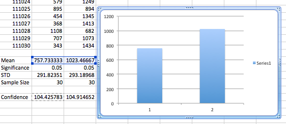

Sitting in a hotel room in Las Vegas, Nevada. Doing some work for the first time this week. Horrible. Horrible. I'm polishing my experimental design, and stuffing it back into my head so I can possibly get some work done. I need to make some concrete goals of working, actual work for some set number of hours per day. I'm going to shoot for three hours. I will keep a timesheet. That's 21 hours per week, which seems reasonable to start with.
I've created the big picture document, which will live in the window tile to the right of whatever lab notebook it is that I'm working on.
This is a log from the road. I'm in central Oklahoma, trying to snatch a couple hours of work out of this road trip. I should be able to. :)
Ok, so I need to write some python scripts to separate the organisms, as well as separate the raw outputs.
I want to understand what my organisms are saying. Are they actually using the mate selection (target display c#) thing. The raw display information should be outputting it. I'm going to ssh into the HPCC over PuppyTouch and see if that gets me some data.
I was able to pull the data down from the HPCC.
I plotted the female preference data for the colleciton of runs. It looks like they are indeed mostly using the target C.

So, this plot is obviously less than ideal, mostly because I can't get matplot lib working. In any case, these are means that I'm comparing, in the same runs, so the data isn't unrelated. They have to total 3600, so they're constrained. So, some kind of normalization has to happen there. Further, these aren't freely chosen. You're either one or the other, so they are related, in a way that I can't even begin to disambiguate, because I'm terrible at stats. :/ Anyway, I can't draw min/max values, plus the confidence interval on my graph, because, duh, Excel. :/
Anyway.
Next, I wanted to see what values they are actually using for the matings. For that, I may need successful matings, so I can somehow pull out what each organism is doing. Finally, I ... feel like I want to pull out how the targeted C values vary based on phenotype. And I have no idea how feasible that is. I'm just interested. Should I be interested? no idea. I can't seem to differentiate between bunnytrial and not.
Ok. My hypothesis is clear. Let's pursue that for now. Moving forward. I need to separate the final organisms into groups so that I can then let them evolve independently under different trees. I need a quickie script for this, or use the condition script to separate my organisms. This will be a problem when looking at the population dump, which is organized by genotype, not organism, so organisms with a single genotype may be sitting on opposite sies of the wall, so I need to be able to account for that. My conditional output script assumes that there is a single values in the field, not multiple that may be comma separated.
Just got done visiting with Angela.
Ok, I'm going to update my conditional line pull script to pull out the comma values and evaluate them independently.
rosiec@Weir:~/Dropbox/School Docs/Research/mate_discrimination_2014/runs/111/basic1_111001/data1$ python ../../../../../research_scripts/common/extract_line_on_condition.py 18 "<1800" detail-100000.spop > detail-zone1.spop rosiec@Weir:~/Dropbox/School Docs/Research/mate_discrimination_2014/runs/111/basic1_111001/data1$ python ../../../../../research_scripts/common/extract_line_on_condition.py 18 ">1799" detail-100000.spop > detail-zone2.spop
So, I think that extracted appropriately.
Now, I need to figure out how to get this to work within the scope of the scripts. :/ I'll need to add the extraction function to the run itself. Alternatively, I need to seed each run file with the content from scratch, maybe. But first, I need to load the detail file.
Had a long conversation last night with Kendall about why I'm having such a hard time working. I came to the conclusion that it's that I'm falling into these bunnytrails that I feel COMPELLED to follow, but I felt like Charles wanted me to bypass. I decided that Charles is wrong. The bunnytrails are how I am understanding the system that I'm working in. If I don't understand the system, how the hell am I going to understand what my results mean? So, I'm going to work to gather the data (and build the pipeline), but I'm going to make note of all the bunnytrails and work on them as separate goals.
So, for the short term, I'm going to finish up the pipeline construction.
I've figured out how load popuation works. Unforunately, it is incapable of ignoring the cell ID, so I'll just have to do a full-sized run for the 2a/b runs, and then do an offset load with the detail files. It's unfortunate, but I don't really know what the hell else to do. It should work with loading the offset cell_id of one over top of the other.